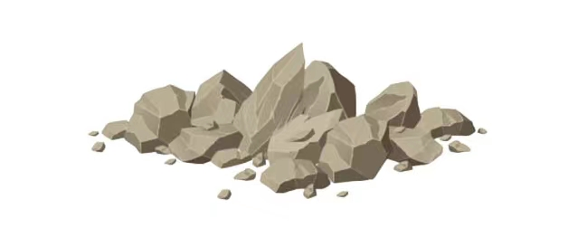
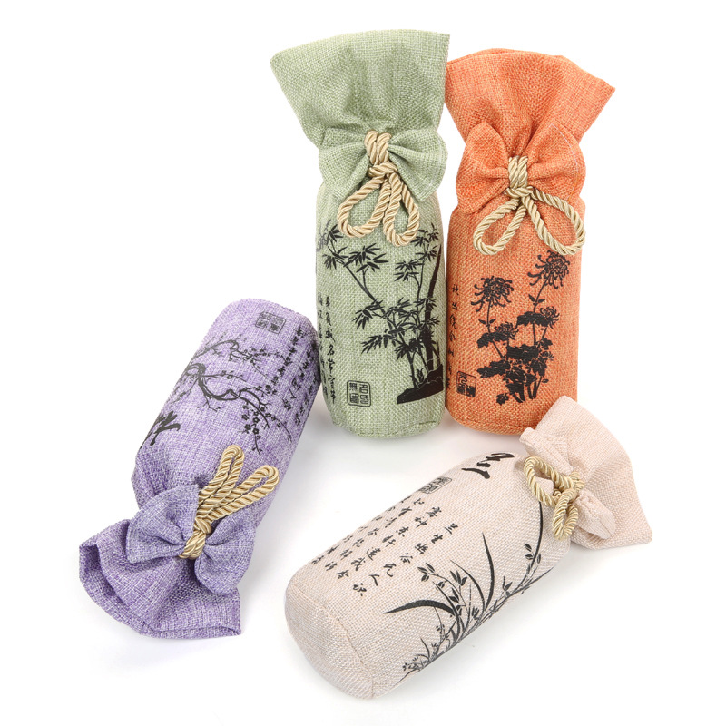
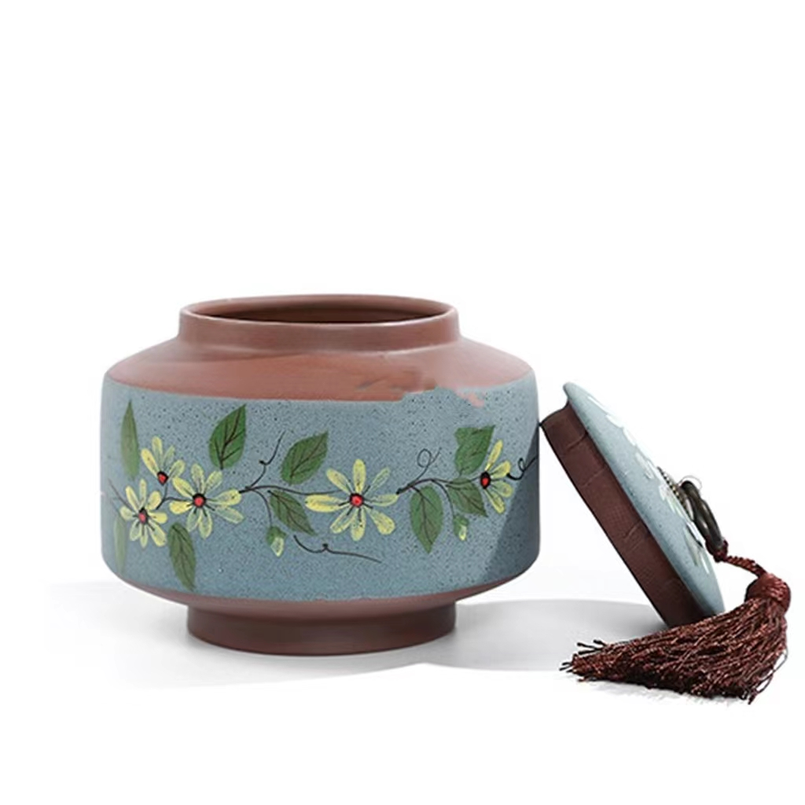

Storage Method


Lime storage method
The roasted Longjing Tea is easy to be affected by moisture and
metamorphism. In time, it is wrapped in paper into a 0.5 kg bag and placed in the tank
with massive lime (not moisture-absorbing and weathered lime).After about 0.5 to 1 months
of proper storage, Longjing Tea has a more fragrant aroma and a more fresh, mellow and
refreshing taste.The dry Longjing Tea can still keep its green, fragrant and mellow quality
after one year storage.
Carbon storage method
This method is similar with lime storage method ,
the difference is to replace lime with charcoal as a desiccant, that is 1 kg of
charcoal into a cloth bag, and after every one or two months to replace once.If charcoal
moisture absorption to first charcoal red, after cooling into the cloth bag, each bag
weight about 1kg, then take out the charcoal and dry it every month or two.


Metal cans storage method
Choose tin cans, stainless steel pot or quality of a
material is solid.There are stainless steel tea pots with two lids on the market,
which are simple and practical. If tea can be filled with clean and tasteless plastic
bags, then put into the pot and cover the lid. It is better to use adhesive tape to seal
the lid.The metallic canister that contains tea should be placed in shade and cool place,
do not put in direct sunlight, peculiar smell, damp, the place that has heat source, such
tin just is not easy rusted. Another tin can material dense, moistureproof, anti oxidation,
anti light, anti odor has a good effect.